Hi, my name is
Tonje Totland
Jenssen.
I study Front-End
Development.
01.
About Me
Hi! My name is Tonje and I'm currently in the learning curve of becoming a software developer.
I enjoy using my creativity to develope and create stuff for the web. My journey studying and learning Front-End started back in August 2021 when I was ready for new challenges in my life. I love how I'm able to use my creativity to create stuff for the web as well as constantly learn and grow each day!
My main focus is trying to build accessible, responsive, neat and inclusive websites/products, and create the best digital experience for all kinds of users.
Here are some of the technologies I've learned to use and worked with this past year as a student:
- 
HTML

CSS
JavaScript

GitHub

WordPress